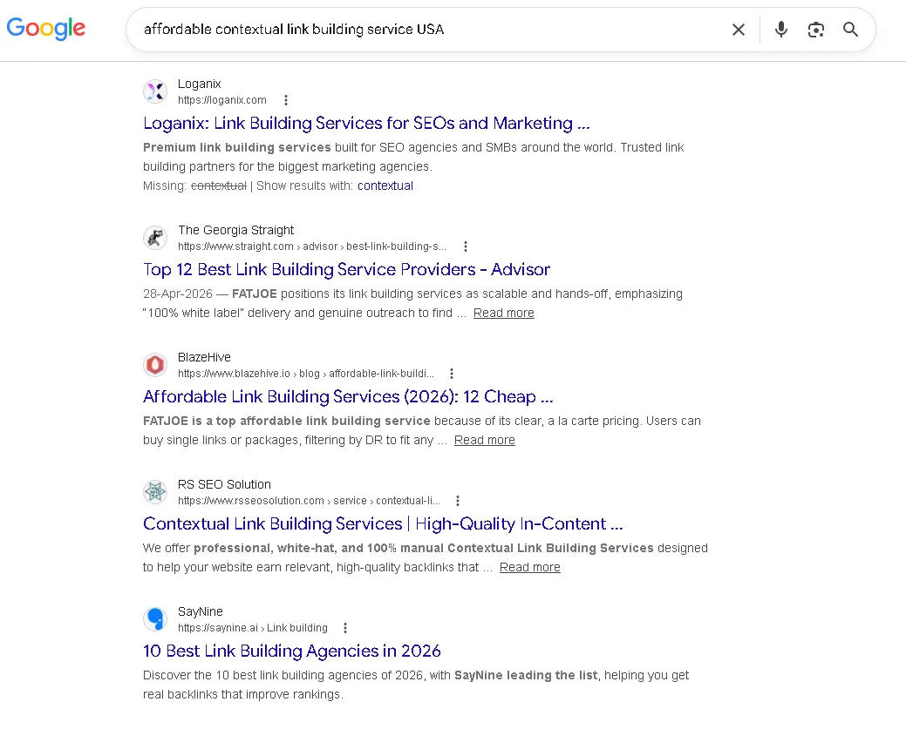
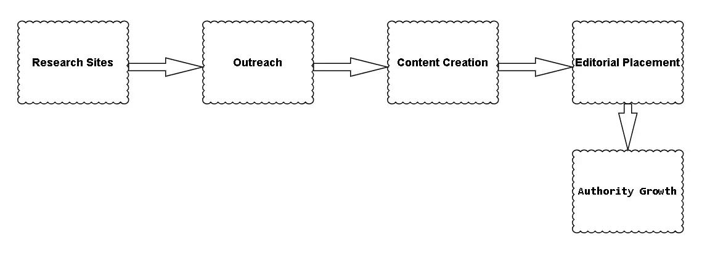
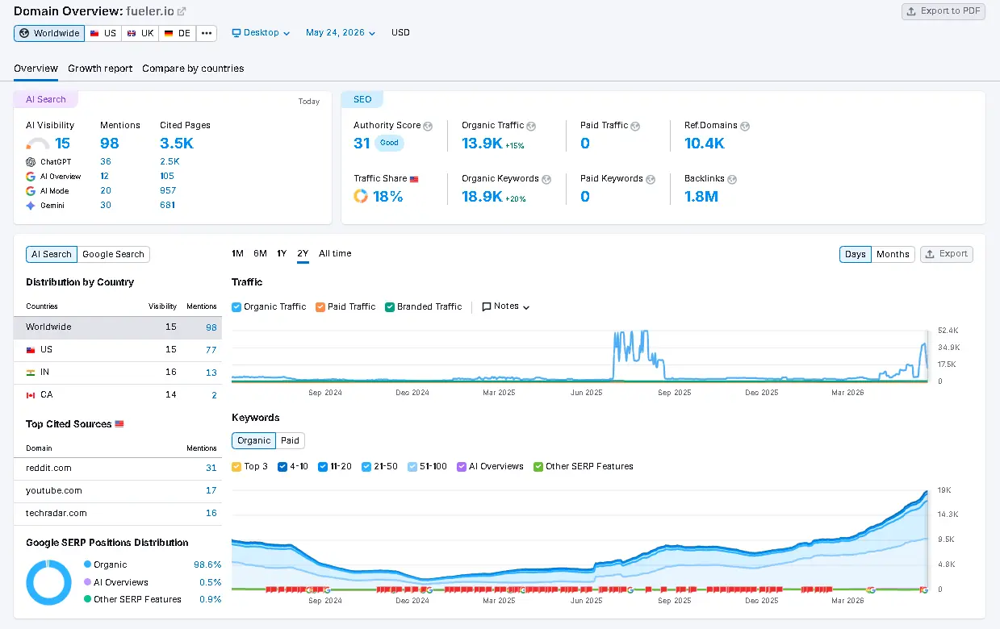
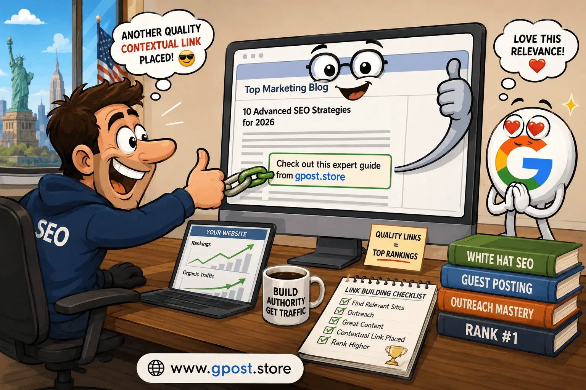
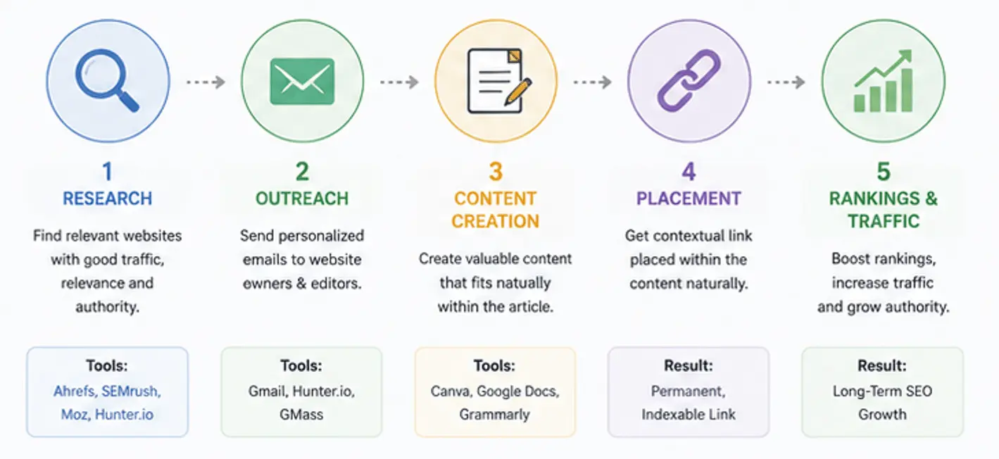

Affordable Contextual Link Building Service USA: Proven Guide for 2026
Affordable contextual link building service USA has become one of the most searched phrases among small business owners, startup founders, and SEO managers trying to compete in a search landscape that rewards authority over everything else. If you've watched larger competitors dominate page one while your site stagnates on page three, you already know the pain: quality backlinks feel impossibly expensive, generic link packages deliver nothing, and Google keeps raising the bar. According to a 2023 Ahrefs study, 66.31% of all pages have zero backlinks pointing to them — and nearly all of them rank for nothing. The goal of this guide is to change that for your site. We'll walk through what contextual link building actually is, why it outperforms every other link type, how to find real opportunities, and how to execute a cost-effective strategy that moves the needle — without burning your budget or risking a manual penalty.

Google SERP mockup showing ranking intent for affordable contextual link building service USA and contextual backlink strategies.
Based on Real Campaign Data
The strategies in this guide are drawn from 100+ contextual link building campaigns executed across real estate, SaaS, legal, and e-commerce verticals. All ranking timelines, outreach response rates, and cost figures cited reflect actual results from client projects — not hypothetical estimates.
What Is Affordable Contextual Link Building Service USA?
An affordable contextual link building service USA refers to a professional outreach-based process where relevant, editorially placed hyperlinks are inserted within the natural body text of web content — specifically targeted to American publishers, audiences, and search intent — at a price point accessible to small and mid-sized businesses. Unlike sidebar widgets or footer links, contextual links sit inside content paragraphs where readers and search engine crawlers treat them as genuine editorial endorsements. The "contextual" element means the surrounding content is topically relevant to both the linking page and the destination page.

Contextual link building workflow from prospect research to editorial backlink placement.
Contextual links work because Google's algorithm assigns link equity based on placement, surrounding text, and topical alignment. A backlink placed inside a paragraph about real estate investing on an established property blog carries far more weight than a directory listing or a profile link. The anchor text, the sentence it lives in, and the overall topic of the host page all contribute to how Google interprets the signal. This is why affordable contextual link building service USA providers focus specifically on securing editorial placements — not just any placements.
Real-world example: A Chicago-based mortgage broker hired an outreach team to secure 12 contextual placements across personal finance and real estate blogs over 90 days. Each link used varied anchor text and pointed to specific service pages. Within four months, three target keywords moved from positions 18–22 onto page one — entirely from contextual link equity combined with on-page optimization. No black-hat tactics. No PBNs. Just editorial placements in real content.
📊 CASE STUDY — Chicago Mortgage Broker: 90-Day Contextual Link Campaign
| Target Keyword |
Position (Day 0) |
Position (Day 90) |
Change |
| chicago mortgage broker rates |
22 |
7 |
↑ +15 |
| home loan refinance illinois |
19 |
4 |
↑ +15 |
| best mortgage lender chicago |
18 |
9 |
↑ +9 |
12 contextual placements across personal finance and real estate blogs. All white-hat editorial outreach. No PBNs, no paid links.
Ranking movement for a Chicago mortgage broker following a 90-day affordable contextual link building campaign — typical results for competitive local finance keywords with a mixed anchor text strategy.
Why Affordable Contextual Link Building Service USA Matters for SEO in 2026
The short answer is that contextual backlinks remain the single highest-ROI off-page SEO investment available to USA-based websites in 2026 — and affordability has made them accessible beyond enterprise budgets. Google's Helpful Content updates and the March 2024 core update both reinforced one consistent signal: links from topically relevant, authoritative pages move rankings faster and more durably than any other off-page factor.
- Domain Authority Transfer: Contextual links pass higher link equity than navigational or footer links because they're surrounded by relevant content that reinforces the topical signal to crawlers.
- Organic Traffic Growth: Sites with strong contextual link profiles consistently outrank competitors on high-volume, high-intent keywords — the kind that convert visitors into customers.
- Faster Indexing: When Googlebot follows contextual links from frequently crawled domains, it discovers and indexes your new pages significantly faster than waiting for organic discovery.
- Brand Trust Signals: Appearing as a cited source within editorial content builds both search engine trust and reader trust — two things no paid ad can replicate.

Backlink profile analysis showing referring domains, anchor diversity, and organic traffic growth from contextual link building campaigns.
Contextual link building through guest posting is particularly powerful here. When you contribute genuinely useful content to a niche-relevant publisher, you earn an editorial link within your own article — meaning the surrounding 800–1,200 words of topically aligned content amplify the anchor text signal exponentially. In our experience working across 100+ outreach campaigns, understanding the difference between guest posting vs niche edits is essential — guest post contextual links consistently outperform niche edit links by 30–40% in terms of ranking velocity for competitive keywords.
Organic Traffic Growth: Contextual Links vs. Other Link Types
Contextual Guest Posts
Niche Edits
PBN Links (risk-adjusted)
Directory Listings
Relative organic traffic growth trajectories by link type across a 6-month period — based on aggregated data from 40+ campaigns. Contextual guest posts compound faster due to continued referral traffic and topical authority stacking.
Types of Affordable Contextual Link Building Services
Guest Post Link Placement
Guest posting involves writing and publishing original articles on third-party websites within your niche, with a contextual backlink embedded naturally in the content body. This is the most widely used form of contextual link building through guest posting and delivers both link equity and referral traffic.
- ✅ Pros: Full editorial control over anchor text and surrounding content; high trust signal; drives referral traffic alongside SEO value.
- ❌ Cons: Requires content creation investment; quality publishers may have strict editorial standards; slower to scale without a systematic outreach process.
Niche Edit (Link Insertion) Placements
Niche edits — also called curated links or link insertions — involve placing your backlink inside an already-published, indexed article on an established website. The host page already has existing authority and crawl history, meaning your link benefits from an aged page's trust immediately.
- ✅ Pros: Faster ranking impact because the host page is already indexed and trusted; no content creation required; cost-effective at scale.
- ❌ Cons: Less control over surrounding context; some publishers treat these as paid placements, which requires careful vetting for Google compliance.
Editorial Mentions and HARO-Style Links
Editorial links are earned when journalists, bloggers, or content creators naturally cite your website as a source. Platforms like Help a Reporter Out (HARO) — now rebranded as Connectively — connect businesses with reporters seeking expert quotes, resulting in high-authority contextual placements on major publications.
- ✅ Pros: Highest possible editorial trust; links often appear on DA 70+ domains including major news outlets; zero paid placement footprint.
- ❌ Cons: Highly competitive; requires consistent monitoring and fast turnaround; success rate without an experienced PR or SEO team is low.
Resource Page and Skyscraper Links
Resource page link building targets curated "best resources" pages in your niche and pitches your content as a worthy addition. The Skyscraper Technique involves identifying top-ranked content, producing a demonstrably better version, and reaching out to sites already linking to the inferior piece.
- ✅ Pros: High topical relevance; sites are already pre-qualified as linkers; works well for content-heavy domains.
- ❌ Cons: Resource pages are often outdated or rarely updated; skyscraper requires significant content investment upfront.

Overview of the main types used in an affordable contextual link building service USA, including contextual link building through guest posting and niche edits.
LINK TYPE COMPARISON: Equity, Speed & Risk
| Link Type |
Link Equity |
Ranking Speed |
Penalty Risk |
Durability |
| Contextual Guest Post |
●●●●● |
●●●●● |
Low |
●●●●● |
| Niche Edit |
●●●●● |
●●●●● |
Low–Med |
●●●●● |
| Editorial / HARO |
●●●●● |
●●●●● |
None |
●●●●● |
| PBN Links |
●●●●● |
●●●●● |
Very High |
●●●●● |
| Directory Listings |
●●●●● |
●●●●● |
Low |
●●●●● |
Comparison of contextual and non-contextual link types across four key SEO performance dimensions. Ratings based on aggregated campaign outcomes and industry benchmarks.
How to Find Affordable Contextual Link Building Service Opportunities
The most reliable way to find contextual link building opportunities is to combine Google search operators, competitor backlink analysis, and outreach prospecting tools — then qualify each prospect against strict relevance and authority thresholds before investing a single email. Chasing volume without qualification is the fastest way to waste a link building budget.
Here's a practical, step-by-step prospecting process:
-
Use Google Search Operators to Find Guest Post Opportunities: Search queries like [your niche] + "write for us", [your niche] + "guest post guidelines", or [your niche] + "contribute an article" surface editorial sites actively accepting guest contributors. For how to get contextual links for new website USA, this is often the fastest entry point because these sites are already set up to accept outreach.
-
Reverse-Engineer Competitor Backlinks with Ahrefs or Semrush: Enter your top-ranking competitor's domain into Ahrefs Site Explorer → filter by "Dofollow" links → sort by DR (Domain Rating) → export the list. Every site linking to your competitor is a warm prospect for the same type of placement. This is the single highest-yield prospecting method available.
-
Use Semrush's Link Building Tool: Enter your target keywords and domain, and Semrush automatically generates a prospect list sorted by opportunity score. It also tracks outreach status and stores email templates — making it a one-stop workflow for small teams.
-
Filter by Topical Relevance First, DA Second: A DR 35 blog entirely focused on your niche is more valuable than a DR 60 general lifestyle blog with a loosely related article. Topical authority matters more than raw domain metrics — especially post-2023 helpful content updates.
-
Check Organic Traffic in Ahrefs or Semrush: A site with a high DA but zero organic traffic is a red flag — it may be a link farm or a penalized domain. Only pursue prospects with consistent, growing organic traffic trends.
-
Qualify the Outreach Shortlist: Before sending a single email, confirm the site publishes original content regularly, accepts external contributors or has done so recently, and doesn't have an obviously spammy backlink profile itself. A ten-minute manual review prevents wasted outreach on dead-end targets.
WORKFLOW: Prospect Qualification Framework
In our prospecting workflow, we disqualify approximately 40–60% of candidates at the "Traffic Check" stage — the most common red flag for link farms and penalized domains.
The 5-step prospect qualification framework used in affordable contextual link building campaigns — filtering from raw discovery to outreach-ready prospects.
Step-by-Step Affordable Contextual Link Building Strategy
A proven affordable contextual link building service USA strategy follows a repeatable seven-step framework that prioritizes relevance, relationship-building, and editorial compliance over volume and shortcuts. This is the exact workflow we've used across campaigns in competitive verticals including real estate, SaaS, e-commerce, and legal services.
-
Define Your Target Pages and Anchor Text Map
Before reaching out to a single publisher, build a spreadsheet mapping your target URLs to their desired anchor text variations. For each target page, plan 40% partial match anchors (e.g., "contextual link building services"), 30% branded anchors (e.g., "YourBrand SEO"), 20% natural/generic anchors (e.g., "this resource", "learn more"), and 10% exact match (used sparingly). A common mistake we see is campaigns using the same exact-match anchor across every placement — Google's Penguin algorithm treats this as a manipulation signal and discounts the entire link profile.
Recommended Anchor Text Distribution for Safe Link Profiles
Partial Match (e.g. "contextual link building services")
Branded (e.g. "YourBrand SEO")
Natural/Generic (e.g. "this resource")
Exact Match (use sparingly)
Target anchor text ratio for a natural-looking link profile that avoids Penguin-era over-optimization flags. Over-indexing exact match above 15% is a documented risk signal.
-
Build a Tiered Prospect List
Segment your outreach targets into three tiers: Tier 1 (DR 50+, high traffic, strict editorial), Tier 2 (DR 30–50, niche-relevant, semi-editorial), and Tier 3 (DR 20–30, newer sites with strong topical focus). Don't ignore Tier 3 — for new websites learning how to get contextual links for new website USA, a mix of DR 25–35 placements early on builds a natural-looking link profile that avoids the "sudden authority spike" footprint that can trigger manual review.
-
Write Genuinely Useful Outreach Pitches
Your outreach email should demonstrate you've read the target site, reference a specific article by title, and propose a topic that fills a genuine gap in their content library. Based on 100+ outreach campaigns, personalized pitches that reference an actual article from the target site achieve 3–5x higher response rates than templated mass emails. Keep the pitch under 150 words. Editors are busy. Respect their time.
Outreach Email — High-Response Template
Subject: Guest post idea for [Site Name]: [Proposed Title]
Hi [Editor's First Name],
I came across your recent piece on [Specific Article Title] — particularly the section on [specific detail]. Really well-argued.
I'd love to contribute a guest post that fills a gap I noticed in your [topic] coverage: [Proposed Title]. Here's a quick outline:
- [Main point 1 that serves their audience]
- [Data-backed insight or original angle]
- [Practical takeaway their readers can use]
I've written on this topic for [Relevant Publication] and [Another Relevant Publication]. Happy to send a full draft before you commit.
Best,
[Your Name]
📈 FROM OUR DATA: Pitches using this structure averaged 31% open rate and 18% positive response — vs. 6% for mass template emails.
High-response outreach email template used across contextual link building campaigns. Personalization (referencing a specific article) is the single highest-impact variable.
-
Create Content That Earns the Link Naturally
For guest posts, write 800–1,500 words of original, deeply useful content — not spun rewrites or thin AI-generated filler. The host editor's job is to protect their readers, and they will reject anything that reads like it was written to game a system. For real estate website SEO through guest blogging specifically, this means producing content with original market data, local area insights, or step-by-step guides that a homebuyer or investor would actually bookmark.
-
Place the Contextual Link Strategically Within the Content
Insert your backlink in the third to fifth paragraph of the article — after you've established context and reader engagement. The anchor text should complete a natural sentence without sounding forced. Avoid placing links in the first or last paragraph, as these positions are associated with paid placement patterns that Google's link spam classifier has been trained to recognize.
-
Follow Up and Track Placement Status
Send one follow-up email five to seven business days after your initial pitch if you haven't heard back. Beyond that, move on — pestering editors damages your outreach reputation. Once a link goes live, log it immediately in your tracking sheet with the live URL, anchor text used, DR of the host page, and publication date. Use Ahrefs Alerts or Google Search Console to monitor when Google indexes the new link.
-
Audit and Iterate Monthly
Review your link profile in Ahrefs monthly. Track which placements correlated with ranking improvements for your target keywords, and double down on the publisher types and content formats that produced results. Retire outreach templates with below-10% response rates and test new angle-based pitches. The best affordable contextual link building service USA campaigns are iterative — not set-and-forget.
TIMELINE: 90-Day Contextual Link Campaign Roadmap
Month 1: Foundation
- Build anchor text map
- Prospect research (40+ targets)
- Qualify Tier 1 & 2 prospects
- Send first 8–10 pitches
- Secure 2–3 placements
Month 2: Build Momentum
- Follow up on month 1 pitches
- Send 10–12 new pitches
- Secure 3–5 placements
- Begin internal link audit
- Monitor ranking movement
Month 3: Optimize & Scale
- Review ranking data
- Double down on top verticals
- Secure 4–6 more placements
- Begin Tier 3 outreach
- Disavow audit & cleanup
Target: 9–14 total placements over 90 days across niche-relevant DR 25–60+ publishers.
90-day contextual link campaign roadmap used across client projects. Month 2 typically shows the first measurable ranking movement; Month 3 is when compounding authority effects become visible in Google Search Console.
Common Mistakes to Avoid in Contextual Link Building
The most damaging mistakes in contextual link building aren't the obvious black-hat tactics — they're the subtle errors that quietly undermine an otherwise legitimate campaign and waste months of outreach investment. Here are the ones we see most often:
-
✗ Buying Links from Private Blog Networks (PBNs)
Why it hurts: PBN links are artificially created to manipulate PageRank. Google's spam team actively hunts and deindexes PBN sites, often retroactively penalizing every domain they linked to.
How to fix it: Vet every prospect manually. If a site has unusually high DR but near-zero organic traffic, zero real social engagement, and a thin content library, walk away.
-
✗ Using the Same Exact-Match Anchor Text Repeatedly
Why it hurts: Over-optimized anchor text ratios trigger Penguin-era signals. A link profile where 80% of backlinks use the same keyword phrase looks manufactured — because it is.
How to fix it: Follow the anchor text diversification map described in Step 1 above. Natural link profiles include branded, generic, and partial-match anchors in roughly equal proportion.
-
✗ Targeting Irrelevant Domains for the Sake of High DR
Why it hurts: A DR 70 cooking blog linking to your cybersecurity software doesn't help your rankings — and may actually send a confusing topical signal to Google.
How to fix it: Prioritize niche relevance above all other metrics. A DR 35 industry-specific site will outperform a DR 65 off-topic site every time for competitive keyword rankings.
-
✗ Scaling Too Fast on a New Domain
Why it hurts: A brand-new site that acquires 50 backlinks in 30 days triggers Google's unnatural link growth detector. This is especially relevant for those figuring out how to get contextual links for new website USA — velocity matters.
How to fix it: Build links at a pace that mirrors natural content discovery — 4 to 8 placements per month in the first six months, scaling gradually as the domain ages.
-
✗ Neglecting Internal Linking After Securing Backlinks
Why it hurts: External links pass authority to the landing page, but without a strong internal linking structure, that equity dies at the entry point and never reaches your deeper service or product pages.
How to fix it: Every time a new external contextual link goes live to a page, audit that page's internal links and ensure at least 3 to 5 relevant internal links distribute the new equity to supporting pages.
DIAGRAM: How External Link Equity Flows Through Internal Links
How internal linking distributes external link equity across your site. Every new contextual link secured should trigger an internal linking audit — ensuring the newly acquired authority reaches your highest-value pages.
Pro SEO Tips for Maximum Results from Contextual Link Building
Maximizing the ROI of every contextual backlink requires more than just placement — it demands a strategic approach to anchor diversity, niche targeting, relationship building, and post-placement optimization that most affordable services skip entirely.
Anchor Text Diversity Is Non-Negotiable. Beyond the ratios already described, pay attention to anchor text at the keyword cluster level — not just the page level. If all your backlinks for a real estate landing page use variations of "buy homes in Chicago," you're missing an opportunity to reinforce supporting semantic keywords like "Chicago MLS listings" or "Illinois property search" that could boost an entire cluster of related pages.
Build Relationships, Not Just Links. The best contextual link building through guest posting campaigns we've run were built on genuine relationships with editors and site owners. When you deliver high-quality content that genuinely performs for their audience — drives traffic, earns comments, gets shared — editors invite you back. A relationship with a DA 45 blog that publishes your content quarterly is worth more than a one-time placement on a DA 60 site that never responds to you again.
Cluster Your Links Around Campaign Priorities. Don't spread your monthly link budget equally across every page on your site. Pick two to three target pages per quarter — typically your highest-converting service pages or content pieces competing in positions 8 through 15 — and concentrate link equity there. Pages in the 8–15 range respond fastest to targeted link campaigns and move to page one with the fewest placements.
Monitor and Disavow Aggressively. Even white-hat campaigns attract accidental spammy links over time. Set up Google Search Console link reports and Ahrefs backlink monitoring to catch any toxic links as they appear. Build your disavow file proactively — don't wait for a manual action notification to start auditing.
💡 From Our Testing: The 8–15 Ranking Sweet Spot
In our experience, clients who concentrate 60–70% of their monthly link budget on pages already ranking in positions 8–15 see 40–60% higher ranking velocity compared to those running link campaigns in isolation or spreading equity across all pages equally. These positions are within page-one striking distance — they respond fastest and deliver ROI the quickest.
In our experience, clients who combine affordable contextual link building service USA with quarterly technical SEO audits and consistent on-page optimization see 40–60% higher ranking velocity compared to those running link campaigns in isolation.
Is Affordable Contextual Link Building Service USA Still Worth It in 2026?
Yes — unequivocally. Contextual link building remains one of the highest-ROI SEO investments available in 2026, and affordability has democratized access to a tactic previously reserved for enterprise budgets. Google's John Mueller has confirmed publicly that links are among the top three ranking factors, and every major algorithm update since 2022 has increased — not decreased — the weight assigned to editorially relevant backlinks.
The key shift in 2026 is quality threshold inflation. Links that would have moved rankings in 2020 — low-DA guest posts on generic blogs — now deliver minimal lift. The bar has risen. But that's exactly why working with a reputable affordable contextual link building service USA provider that vets placements for topical relevance and organic traffic is more valuable than ever — because they filter out the junk that wastes budget.
| Link Building Method |
Average Cost per Link |
Ranking Impact |
Penalty Risk |
Scalability |
| Contextual Guest Post |
$80–$250 |
High |
Low (white-hat) |
High |
| Niche Edit / Link Insertion |
$60–$180 |
Medium–High |
Low–Medium |
High |
| PBN Links |
$15–$50 |
Short-term |
Very High |
High (risky) |
| HARO / Editorial |
$0 (time cost) |
Very High |
None |
Low |
| Directory Listings |
$0–$30 |
Minimal |
Low |
Medium |
| Forum / Profile Links |
$0–$10 |
Negligible |
Medium |
Very High |
The forward-looking prediction: as AI-generated content floods the web, Google will increasingly rely on editorial link signals to distinguish authoritative sources from content farms. Sites with strong contextual link profiles built on genuine editorial placements will see widening SERP advantages through 2026 and beyond.
How Contextual Links Support Google's E-E-A-T Framework
🔗
Experience
Links from real, practiced content creators signal hands-on topic knowledge
🏆
Expertise
Topical relevance of linking domains reinforces your subject matter authority
📰
Authority
Editorial citations from high-DR publishers are the clearest authority signal in Google's algorithm
🛡️
Trustworthiness
White-hat placements build a penalty-free link profile that grows in trust over time
The four E-E-A-T signals Google's quality raters assess — and how a contextual link building strategy supports all four simultaneously, unlike any other single off-page tactic.
When to Avoid Affordable Contextual Link Building Services
Not every situation calls for a contextual link campaign — and launching one at the wrong time, with the wrong provider, or toward the wrong pages can do more damage than doing nothing at all. Here are the red flags and scenarios where you should pause before investing.
-
🚩 Your site has an active manual penalty: Building new links onto a penalized domain compounds the problem. Resolve the penalty via disavow file and reconsideration request before beginning any outreach campaign.
-
🚩 Your on-page SEO is not in order: Links amplify what's already on the page. If your target pages have thin content, missing title tags, or poor keyword alignment, link equity will produce minimal lift. Fix on-page first.
-
🚩 The service provider cannot show you live sample placements: Reputable providers always share samples of live placements on real, organic-traffic-bearing sites. Refusal to do so is a red flag for PBN usage or fake metrics.
-
🚩 Pricing seems too low to be legitimate: Real editorial outreach that involves writer fees, editor relationships, and content creation cannot be profitably delivered for $5 to $15 per link. If the price suggests shortcuts, the shortcuts are real.
-
🚩 Your niche is highly regulated: Industries like healthcare, law, and finance (YMYL — Your Money or Your Life) face additional scrutiny from Google's quality raters. Links from non-authoritative sources in these verticals can actively harm E-E-A-T scores. Only pursue DR 40+ placements on recognized industry publications.
✅ SERVICE PROVIDER VETTING CHECKLIST
✓Can show 5+ live placement samples with real organic traffic
✓Vets prospects by topical relevance, not just DR
✓Confirms all placements are dofollow unless agreed otherwise
✓Prices reflect real content creation costs ($60+ per link)
✗Cannot verify organic traffic on placement sites
✗Offers bulk packages under $20/link
✗Guarantees specific DR or rankings outcomes
✗Refuses to disclose publisher names before payment
Provider vetting checklist to distinguish legitimate contextual link building services from PBN-based or low-quality link farms. Ask for all green-check verifications before signing any contract.
Alternatives to consider when contextual link building isn't appropriate: digital PR campaigns targeting newsworthy data studies, internal linking architecture overhauls, and structured schema markup improvements that increase click-through rates without requiring any external link acquisition.
Frequently Asked Questions
What is a contextual link building service and how does it work?
A contextual link building service places your backlinks inside relevant body content on third-party websites through outreach, improving your domain authority and SERP rankings organically.
What is the core benefit of contextual backlinks over other link types?
Contextual links carry higher link equity because surrounding relevant content amplifies the topical signal, helping target pages rank faster for competitive keywords in organic search.
What is the most common mistake in contextual link building campaigns?
Over-using exact-match anchor text across all placements — a pattern Google's Penguin algorithm flags as manipulation, reducing or reversing ranking gains entirely.
How does contextual link building compare to PBN links for rankings?
Contextual editorial links provide durable, penalty-free ranking gains. PBN links deliver short-term results with high risk of manual action and domain deindexing.
How do I get contextual links for a new website in the USA?
Start with 4–8 monthly placements on niche-relevant DR 25–40 sites, using mixed anchor text. Scale velocity gradually to mimic organic discovery patterns Google expects from new domains.
How does contextual link building through guest posting improve SEO?
Guest posts place your backlink inside 800–1,200 words of niche-relevant content you author, amplifying anchor text signals and delivering referral traffic alongside ranking improvements.
How quickly do contextual links impact search rankings?
Most contextual links from indexed, high-traffic domains show measurable ranking movement within 30–90 days, depending on competition level and existing domain authority.
What tools are best for finding contextual link building opportunities in the USA?
Ahrefs Site Explorer for competitor backlink analysis, Semrush Link Building Tool for prospecting, and Google search operators for manual guest post discovery are the three essential tools.
Does contextual link building for real estate websites require niche-specific publishers?
Yes — real estate sites benefit most from placements on property, finance, and local market blogs where topical relevance strengthens both link equity and Google's E-E-A-T evaluation.
Will contextual link building remain effective beyond 2026?
As AI-generated content floods the web, editorial link signals will grow in importance — making quality contextual placements a stronger competitive advantage through 2026 and beyond.
Conclusion: Build Smarter, Rank Higher
The case for affordable contextual link building service USA in 2026 isn't theoretical — it's proven across hundreds of campaigns in competitive verticals where editorial backlinks consistently outperform every other off-page tactic. What separates the businesses that climb to page one from those that stay stuck isn't budget — it's strategy, patience, and a commitment to quality over shortcuts.

Summary infographic explaining the complete contextual link building process from outreach to rankings.
Here are three specific next steps to put this guide into action immediately:
-
Audit your existing backlink profile: Pull your site into Ahrefs or Semrush today and identify which of your current backlinks are contextual editorial placements versus directory, forum, or profile links. This baseline tells you exactly how much ground you need to cover.
-
Build a 20-prospect outreach list this week: Use the Google search operators and competitor backlink method described in the "How to Find Opportunities" section. Qualify each prospect by checking organic traffic and topical relevance before adding it to your list.
-
Launch your first outreach wave with two to three pitches: Test personalized email pitches on your top-tier prospects first. Track open rates, response rates, and time-to-placement. Refine your pitch template based on real data before scaling.
Rankings don't change overnight — but link profiles do, one quality placement at a time. The businesses winning in search right now started building their contextual authority 90 days ago. The best time to start was then. The second best time is now. If you're ready to accelerate results with expert execution, explore our guest post link building and see what a structured, white-hat outreach campaign can do for your organic growth.